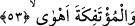
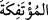
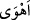
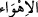
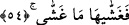
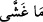
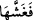

yâni Nuh kavmi peygamberlerine karşı “daha zâlim” ve Âd ve Semûd kavimlerinden
daha “azgın” idiler. Zira Nuh kavmi peygamberine eziyet ediyor, insanları ondan
uzaklaştırıyor ve hattâ çocukları bile onu dinlemekten sakındırıp mecâli kalmayıncaya
kadar kendisini dövüyorlardı. Onun dâveti aralarında bin yıl kadar kalmasına rağmen
tesir etmedi ve ona sadece küçük bir grup îman etti.
Kalbi kararmışa öğüdün faydası yoktur,
Çünkü demir çivi taşa girmez.
Bu âyette kalbin tevhîd gemisinde yer almadan evvel (kötü) sıfatlarının yok
edilmesine işâret edilmektedir. Zira bu gemiye binme durumunda olan kimseler; nefisle
kalp arasında kalmış, kesreti müşâhede sebebiyle kalbe zulmetmiş ve nefs ile sıfatlarına
meyil suretiyle kalbe karşı azmışlardır.
53. Altüst olan şehirleri de O böyle yaptı.
Ehli ile birlikte “alt üst olan” Lut kavminin oturduğu “şehirleri de”… (__WORD__), Lut
(a.s.)’ın kavmine âid karyeler ya da şehirlerdir. Bir yerin ehliyle beraber “i’tifâk”
edilmesi, oranın onlarla birlikte kaldırılıp altının üstüne getirilmesini ifâde eder.
“Mu’tefike” kelimesi de yine (__WORD__) kelimesine ma’tuf olmak üzere mensuptur. Yâni Allah
Mu’tefike’yi de helâk etti mânâsınadır. Bir görüşe göre de Mu’tefike kelimesi (__WORD__) fiili
ile mensubtur. “O böyle yaptı.”; yâni devirip yıktı. Yâni Mu’tefike bölgesi Cibril
(a.s.)’ın kanatlarının üzerinde göğe kaldırıldıktan sonra ters çevrilerek yere bırakıldı. (__WORD__) kelimesi; atmak, fırlatmak anlamına gelir. Zeccâc bu fiili “Onu hâviyeye (yerin
altına) attı” şeklinde tefsir etmiştir.
54. Onların başına getireceğini getirdi!
Azabın her çeşidinden “onların başına getireceğini getirdi.”
Kâşifî şöyle der: “Sonra o memleketleri örteceği şeylerle örttü; yâni buralara taşlar
yağdırdı.” Bu ifâde onlara inen azapla diğer insanları korkutma ve onların hâlinin
çirkinliğin zirvesinde bir hâl olduğunu beyân babındandır. (__WORD__) ifâdesi (__WORD__) fiilinin
ikinci mefulüdür.
Şâyet biz: “Bu fiilin muzâaf olarak getiriliş sebebi, geçişliliği (ta’diye) sağlamak
içindir.” dersek, mânâyı “Allah Mu’tefike bölgesine dizi dizi ve nişaneli olan taşları